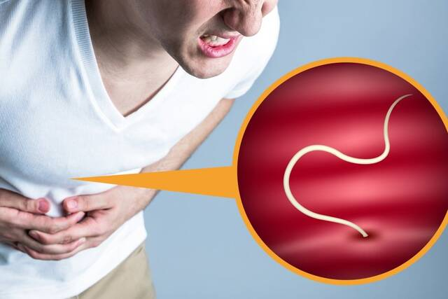
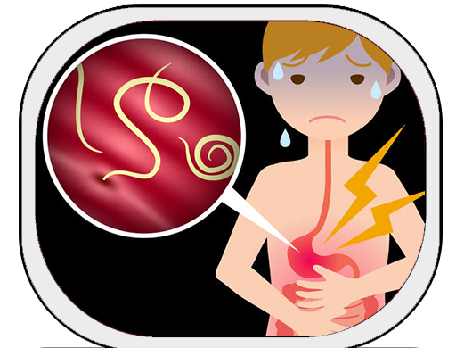
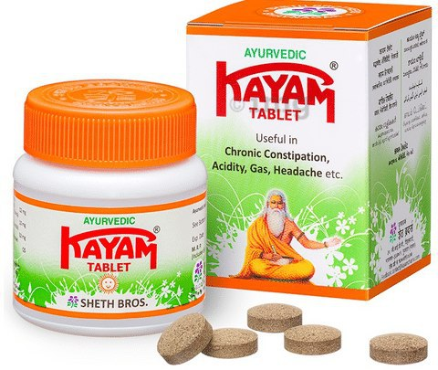
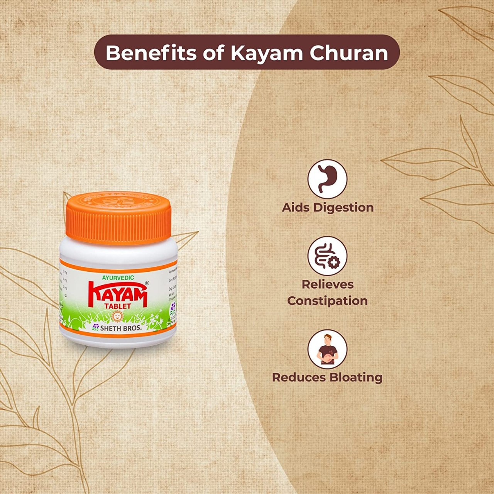
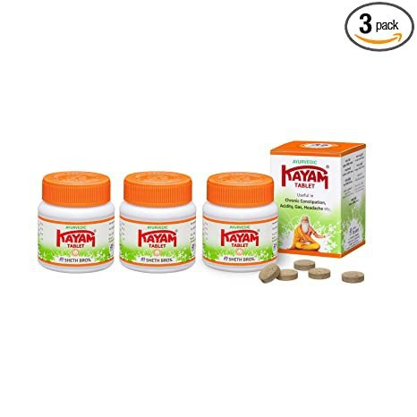

! Ҳозирги кунда гижжа касаллиги дунёда тарқалиши боъйича нафас йоъллари касалликларидан кейин иккинчи оъринда туради.

Жаҳон соғлиқни сақлаш ташкилотининг маълумотига коъра, дунёда ҳар тоърт кишидан бири гелминтоз (гижжа)лар билан касалланган.
Бугунги кунда одамлар, ҳайвонлар ва оъсимликлар ҳисобига яшовчи паразитларнинг 15 мингдан зиёд тури маълум. Шулардан аскарида ва остритса гижжалари инсонларда коъпроқ учрайди.
Тахмин қилинишича, дунёда ҳаёти давомида бирон марта гижжа билан касалланмаган киши мавжуд эмас. Бугунги кунда ер сайёраси аҳолисининг 24 фоизи ёхуд 1,5 миллиард киши гижжалар билан касалланган ҳисобланади.
! Жигар, мия, ўпка, қон, ошқозонда яшайдиган минглаб паразитлар ҳам бор. Уларнинг қарийб ҳаммаси ўлимга олиб келади. Ҳаммаси одатда оғиздан ёқимсиз ҳид келишидан бошланади.

Паразитлар билан зарарланишга оид аниқ мисоллар келтириш мумкин
Аниқланишича, баъзи тасмасимон чувалчанглар саратонга олиб келади.
Дарвоқе, одам эмас, балки айнан чувалчанглар саратонга учрайди. Оқибатда, улар саратон ўсмаларига айланади. Икки-уч ойга бормай ҳаммаси ўлим билан тугайди.
Вужудингизда паразитлар ин қургани ҳақида дарак берувчи илк симптомлар қуйидагича:
Оғиздан ёқимсиз ҳид келиши – асосий симптом;
Танадаги папилломалар;
Аллергия (тошмалар, кўз ёшланиши, тумов);
Терида тошмалар пайдо бўлиши, унинг қизариши;
Тез-тез шамоллаш, ангина, бурун битиши;
Сурункали чарчоқ (қандай иш қилманг, дарров чарчаб қоласиз);
Тез-тез бош оғриши;
Қабзият ёки ич суриши;
Бўғим ва мушаклар оғриши;
Асабийчанлик, уйқу ва иштаҳа бузилиши;
Кўз остида қорамтир доғлар, кўз солқиши.
Агар бўйин, қўлтиқ ёки баданда папилломалар бўлса – паразитлар аъзоларингизни еяпти!
Бугун паразитлардан халос бўлишга имкон берувчи ягона ишланма бор.
Бу "КАЙАМ ТАБЛЕТЬ" паразитларга қарши восита бўлиб, уни ҳозир акция бўйича олиш мумкин.



"КАЙАМ ТАБЛЕТЬ" паразитлардан тозаловчи, дунёда ягона воситадир.
Aйнан шу сабабли халқаро дорихона тармоқлари ва фармацевтика компаниялари унинг кетидан қувмоқда. Бошқа антипаразитар препаратларга қиёсан, бу восита одамларни зарарлайдиган қарийб барча паразитларга қарши ишлайди.
Одам қандай паразитлар билан зарарлангани ҳақида аниқ айтиб бўлмайди. Аммо "КАЙАМ ТАБЛЕТЬ" бош миядан тортиб то жигар ва ичакларда яшайдиган паразитларни йўқ қилади. Бугун мавжуд препаратлардан биронтаси бунга қодир эмас.
Cамарадорлиги паразитлар билан зарарланган 100 киши қатнашган тадқиқотлар орқали исботланди. Натижалар билан танишинг: